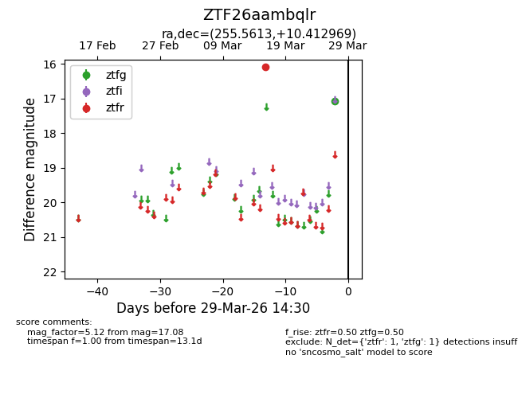
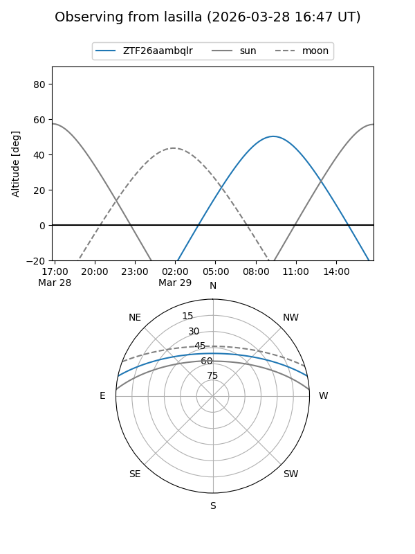
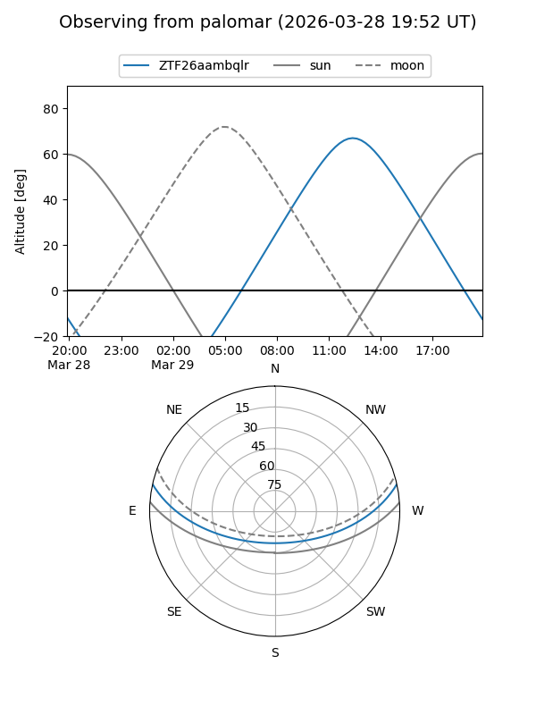

ZTF26aambqlr
Target ZTF26aambqlr at 2026-03-29 14:33
Aliases and brokers:
FINK: link
Lasair: link
ALeRCE: link
alt names
ZTF26aambqlr (ztf,fink_ztf)
Coordinates:
equatorial (ra, dec) = 255.5613,+10.41297
equatorial (HMS+DMS) = 17:02:14.72,+10:24:46.69
galactic (l, b) = (29.9962,+28.93782)
Flags:
Photometry:
last ztfg=17.08, ztfr=16.08
1 ztfg, 1 ztfr detections
Lightcurve

Visibility


Additional plots